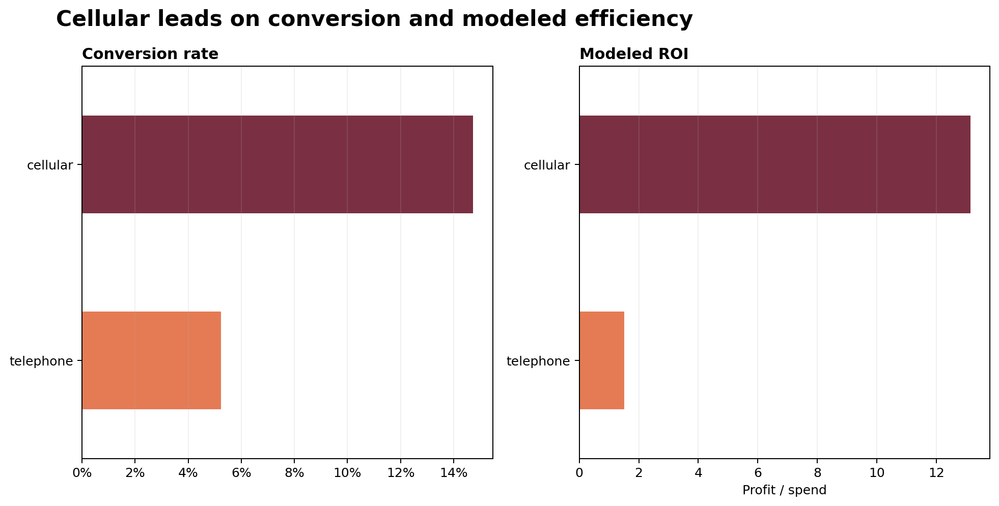
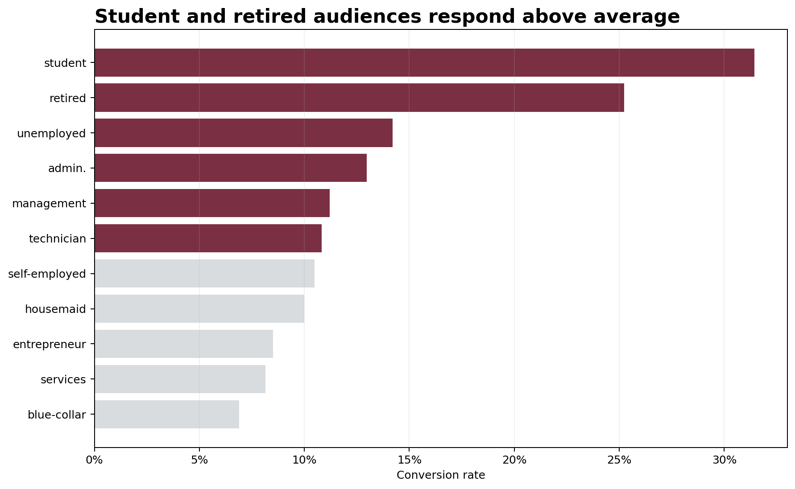
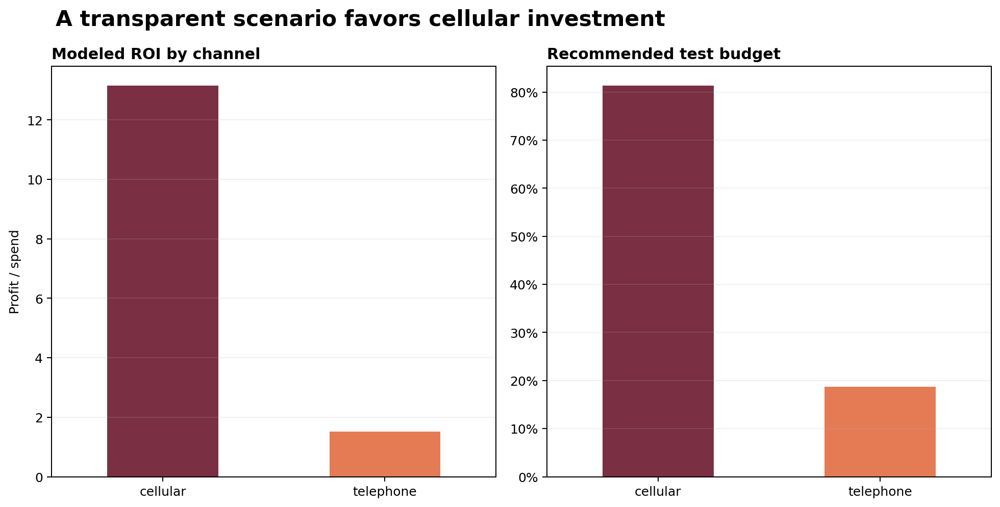

Business question
How should campaign budget be reallocated?
The goal is to separate reach from productive engagement, compare cellular and telephone contact economics, and identify segments that convert without excessive repeated touches.
Approach
- Cleaned 41,188 public campaign records.
- Built a duration-based engagement funnel.
- Compared conversion by contact channel, job, and age.
- Modeled spend using explicit per-contact cost assumptions.
- Translated profit per contact into a budget allocation scenario.
Conversion funnel
Only a small share reaches a meaningful conversation.

Channel economics
Cellular combines scale with stronger efficiency.
The ROI model assumes $240 contribution per conversion, $2.50 per cellular contact, and $5.00 per telephone contact. These are scenario inputs because the source data does not include media cost or customer lifetime value.
| Channel | Contacts | Conversions | Rate | ROI | Budget |
|---|---|---|---|---|---|
| Cellular | 26,144 | 3,853 | 14.7% | 13.1× | 81% |
| Telephone | 15,044 | 787 | 5.2% | 1.5× | 19% |

Audience segments
Response varies sharply by customer profile.

Budget allocation
Move spend toward profitable contact efficiency.

Recommendations
Spend smarter before spending more.
01 · Prioritize cellular
Use cellular as the default scalable channel while preserving a smaller telephone test budget for high-value segments.
02 · Suppress fatigue
Conversion falls as repeated campaign contacts accumulate. Cap attempts and shift nonresponders into a slower nurture path.
03 · Test high-response segments
Build controlled audience tests around the strongest job and age groups rather than applying broad targeting rules immediately.
Dataset and limitations
Source: UCI Machine Learning Repository, Bank Marketing dataset, downloaded July 21, 2026. The campaign ran from May 2008 to November 2010. Call duration strongly predicts conversion but is only known after a call, so it is used to describe the funnel—not as a pre-contact targeting feature. ROI is a planning scenario, not reported financial performance.